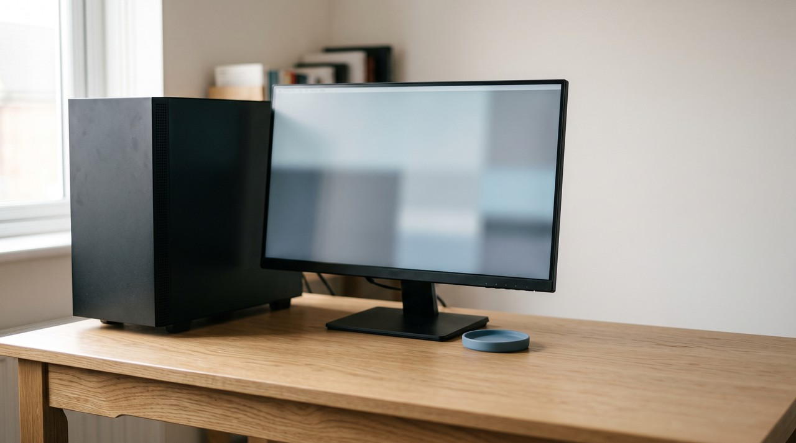

How to turn a lecture recording into notes you can actually search
A lecture recording becomes searchable when you save two layers instead of one. You need the spoken words as a transcript with timestamps, and you need images of the screen taken every quarter of a second. Most of what you will search for later was written on the board and never said out loud. Things like a formula, a diagram label, or a file path are missed by an audio only transcript, so it cannot find them.
It is November and you need one thing from a lecture you sat through in September. You remember the teacher writing something on the board about why the second method fails, and the recording is still in a folder. So you open the transcript and press Ctrl+F. You type the word you are sure he said, but you get nothing back.
This happens to nearly everyone who records lectures, and a bad transcript is not the cause. The words you look for months later are usually the ones that were written down and never spoken. The teacher just says "this term here" and points at the board. The actual term is on the board, so it never went through the microphone and never reached the transcript. No amount of searching will pull it back.
So there are two separate things sitting inside a lecture recording. There is what was said, which speech recognition can turn into text. There is also what was shown, like the slides, the whiteboard, and the code on screen. This visual part only gets into your notes if something takes pictures of the screen while the recording plays. Searchable notes mean keeping both parts with a timestamp on each, so you can jump back to the exact moment.
Why does searching a lecture transcript so often find nothing?
Three things go wrong here, and they stack on top of each other. The first problem is the one above, where the screen never made it into the file at all.
The second problem is that speech recognition mishears technical vocabulary more often than ordinary conversation. A term that comes out wrong is a term you cannot search for, and this gets worse if the model did not hear your lecturer's accent much during training. OpenAI says this plainly in its own Whisper model card. The models can produce text that was never spoken, and their accuracy is uneven across different accents and dialects.
The third problem is that finding a word does not help much when the file is a long wall of caption fragments with no times attached. You find the phrase but you still have no idea where it happened in a two hour recording. So you end up scrubbing the video anyway to find the spot.
| What you go looking for | Where it actually lives | Does an audio only transcript find it? |
|---|---|---|
| A phrase the lecturer repeated | The audio | Yes |
| A formula or symbol written on the board | The screen | No |
| The label on a diagram | The screen | No |
| A command or file path typed on screen | The screen | No |
| A technical term said once, in a strong accent | The audio, if it was heard correctly | Sometimes |
| The exact minute something happened | The timestamps | Only if they were kept |
How do I make a lecture recording searchable for free?
Sometimes the lecture is on YouTube, or your university portal publishes captions with it. In that case, the audio layer is already done for you and it costs nothing.
- Open the video, click the three dots underneath it and choose Show transcript. Copy the whole panel.
- Paste it into a Google Doc or a plain text file, and save that next to the recording so the two never get separated.
- For the screen, play the recording and press Print Screen every time the board or the slide changes, then paste each picture into the same document under the nearest timestamp.
This manual way works, and it is the right amount of effort for a short seminar. It stops being sensible when the video goes past twenty minutes. A one hour lecture where the board changes often means taking thirty or forty manual screenshots. To take those pictures you have to watch the whole hour again, and that is the exact hour you were trying not to spend.
How do I build the searchable version on my own computer?

This is the job VideoDoc does. The images only mode exists because I kept doing that manual scrub myself. I would drag the playhead back and forth, just looking for one slide I knew was in there somewhere.
- Point VideoDoc at the recording. A file already on your computer works, and so does a link to a public video.
- Choose A document for AI. You get a PDF and a Markdown file, every word timestamped, with the on screen slides and code placed next to the words that were spoken over them.
- If the board changes constantly, run the same recording again as Every frame as images. That saves the whole lecture as numbered pictures, four a second by default, each one named by the exact moment it was taken, like
frame_000123_00h01m45.50s.jpg. - Keep the
frames_index.csvthat lands in the folder. It lists every image against the moment it came from, so a row in a spreadsheet takes you straight back to a minute in the recording.
An hour of lecture is about 14,400 pictures when you take four a second. That sounds absurd, but identical frames are thrown away as the process goes on. A lecture that sits on one slide for three minutes keeps one picture of that slide instead of 720.
There is a catch here, and it is worth knowing before you start. A frame is only dropped when it is a pixel for pixel copy of the one before it. This test is exact, so it never quietly throws away something that changed. But this means a recording with a webcam bubble in the corner or a clock ticking on screen dedupes almost nothing, because something is always moving. On that kind of recording, you drop the sampling to one a second, and you get a quarter of the files.
How do I actually find something again in November?
- Search the words first. Open the PDF or the Markdown file, Ctrl+F the phrase you half remember, and read the timestamp next to it.
- Take that timestamp to the pictures. The file names in the frames folder are the times, so 00h47m is four or five files away from the row you want.
- If the words fail you, ask the document instead. Drop the PDF into ChatGPT, Claude, Gemini or NotebookLM and ask what was on the board when the teacher explained the second method. It can look at the pictures, which is the part Ctrl+F will never do.
- Only then go back to the video, and now you have a minute and a second to jump to rather than an hour to sit through.
That order is the whole point of doing this. You stop rewatching lectures, and most weeks you never open the recording at all.
None of this makes the pictures themselves text searchable. VideoDoc does not read the writing off a slide and index it, so Ctrl+F will never find a word that exists only inside an image. What you get is the moment it happened and the picture from that moment. You also get an AI that can read the picture for you. Links work on public videos only, and a private or login only video needs your own browser login. The duplicate removal is exact rather than clever, so anything moving on screen forces it to keep every frame. Also, a recording made by a phone at the back of a hall gives a poor transcript whoever converts it.
Make one recording searchable tonight.
Try it free in your browser on a file you already have. Pro is $19 once, lifetime, 2 machines, and it runs on Windows and Apple Silicon Macs.
Quick questions
Can I search the words written on a slide?
You cannot search them with Ctrl+F. The slide is saved as a picture, and a picture holds no text to search. You reach it through the transcript timestamp or the timestamped file names instead. But an AI reading the document can look at that picture and tell you what it says.
How long does a one hour lecture take to convert?
It depends on your computer, and the app shows a live estimate before it starts. Listening to the audio is the slow half, so the images only mode finishes much faster than a full document. Having an NVIDIA graphics card makes the transcription part considerably quicker than running it on the CPU.
Does my lecture recording get uploaded anywhere?
No, it does not leave your computer. The transcription, the screenshots, and the face blanking all run on your own machine. If you give the app a link, the video has to be downloaded first, and that download comes over your own connection.
What if my lecturer's face is in the corner of every frame?
You can have every face filled with solid black. This works for the frames folder and the screenshots inside the document. Nothing is cropped and nothing is blurred, so the slides and the code underneath stay exactly as they were.
Pick the one lecture you have already gone back to and failed to find something in. Convert that one tonight, because you will be looking for it again before the term is over.

I am a telecom engineer and business analyst from Pakistan, and I build small honest desktop tools under Designesh. I made VideoDoc because I wanted my AI to read the lectures I study from. Everything here is tested on my own machine first.